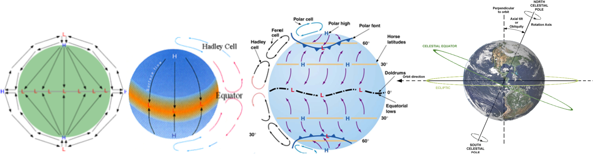
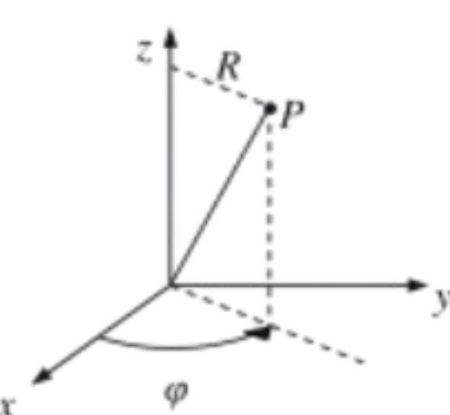

In the atmosphere, the Coriolis acceleration is responsible for wind
circulation patterns around centers of high and low pressure in the earth’s atmosphere.
In an inertial frame, a nonzero pressure gradient accelerates fluid from regions of higher
pressure to regions of lower pressure,
as \(\boxed{- \frac{\partial p}{\partial x_j}}\) of Navier-Stokes momentum equation and \(\boxed{-\nabla' p}\) indicates

Imagine a cylindrical polar coordinate system  with the z-axis normal to the earth’s surface and the origin at the center of a high- or low-pressure region in the atmosphere
- If it is a high pressure zone, \( u_R \) would be outward away from the z-axis in the absence of rotation since fluid will leave a center of high pressure. The Coriolis acceleration
\(
-2\boldsymbol{\Omega} \times \mathbf{u} = -2\Omega_z u_R \mathbf{e}_\varphi
\)
is in the \(-\varphi\) direction in the Northern hemisphere, or clockwise as viewed from above
- If the flow is inward toward the center of a low-pressure zone, which reverses the direction of \( u_R \), the Coriolis acceleration is counterclockwise
In the southern hemisphere, the direction of \( \Omega_z \) is reversed so that the circulation patterns described above are reversed